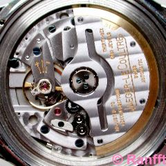
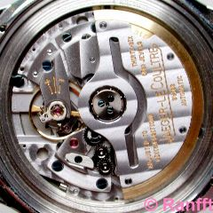
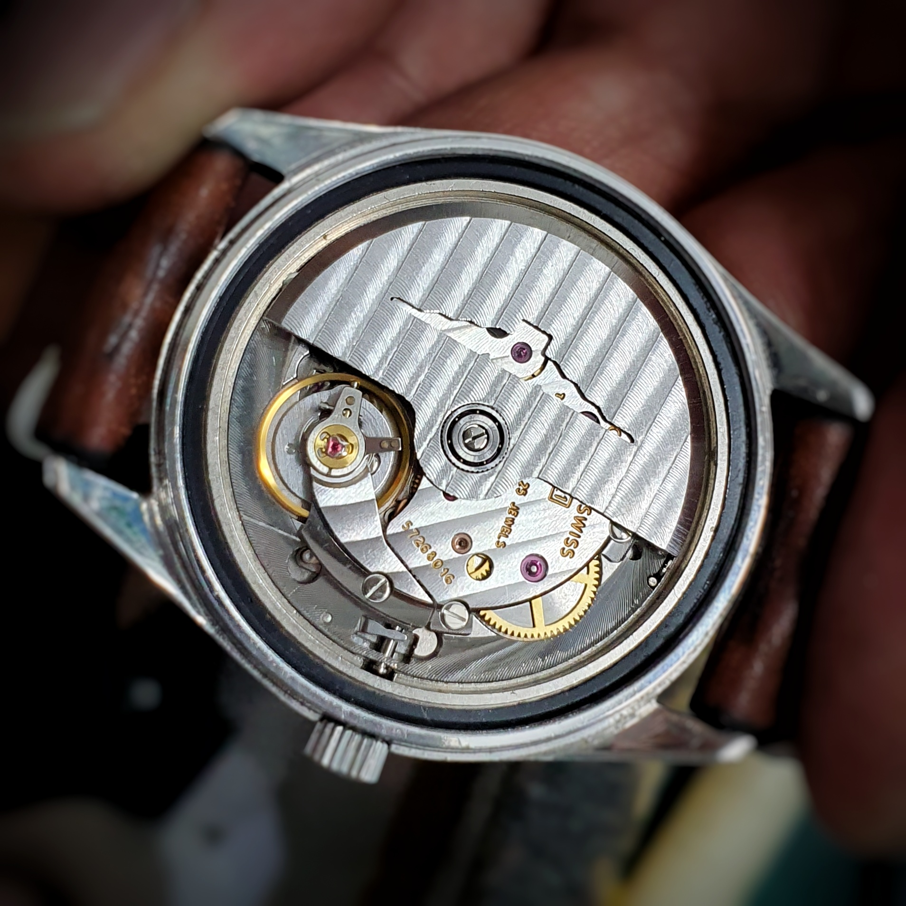

‘왜 L990인가?’ 의문을 가지실 것 같습니다. 신형 무브먼트도 아닌 40년도 더 지난 무브먼트를 왜 이제 와서 뜬금없이 들추어낼까요? 여기에는 크게 두 가지, 1) 개인적인 의미와 2) L990 자체의 의미가 특별한 점이 있기 때문입니다.
1) 개인적인 의미
먼저 L990은 저에게 의미 있는 무브먼트입니다. 제가 보유하고 있는 론진 빈티지의 무브먼트가 바로 L990.1입니다. L990에는 여러 배리에이션이 있는데 그 원형이 되는 무브입니다. 아버지의 예물시계를 물려받은 저의 첫 시계이자, 저를 시계라는 취미로 이끌어준 시계입니다. 이러한 개인적인 이유로 L990에 대한 흥미를 갖게 되었습니다.
2) L990 자체도 주목할만한 무브
개인적인 흥미를 갖고 공부하며 느낀 것은 L990이라는 무브먼트 자체의 의미가 짚고 넘어갈 만하다는 것이었습니다. 크게 역사적인 의미와 설계 측면의 흥미로운 부분으로 생각해볼 수 있습니다.
① 역사적 의미
⒜ 먼저, L990은 Longines의 마지막 In-house Movement입니다(전설적인 린드버그 아워앵글에 장착된990의 수정 버전인989가 실제 마지막).물론 론진과 함께 스와치그룹에 속한ETA사가 론진만을 위해 공급하는 무브들을 인하우스라고 간주한다면 의미는 달라집니다.다만 론진의 역사와 경험,기술로 직접 설계하고 제작하여 활용한 무브로서는 마지막이라는 점에서 이견이 없으실 거라 믿습니다.좋은 무브를 만들기 위한 브랜드만의 고민과 연구가 담겼다는 의미에서 론진의 마지막 인하우스 무브먼트라고 생각합니다.이는 주목할만한 점이라고 생각합니다.
⒝ L990의 비운의 역사 역시 흥미를 끄는 점입니다. 정확히 말하면 L990에 비운이라기보다는 론진에 비운이라고 할 수 있습니다. 무브먼트가 개발되고 얼마 후 닥쳐온 쿼츠파동으로 정작 론진에서는 얼마 사용해보지도 못하고 Nouvelle Lemania에 팔려가게 됩니다.덕분에 다른 브랜드들이L990을 이용하여 재미를 보는 사례가 많았고 르마니아를 흡수한 브레게에서는 아직 현역으로 사용되는 무브먼트입니다.
② 설계적 의미
⒞ L990은 Ultra-Slim 무브먼트입니다. 그 두께가2.95mm로3mm 미만의 초박형 무브먼트입니다.탄생 당시부터 가장 얇은 오토매틱 무브먼트(3핸즈,센터세컨 기능을 포함한)로 기록되며 이 기록은2003년까지 유효하게 됩니다.무려26년간의 기록입니다.지금까지도 몇몇 하이엔드 군의 무브를 제외하면 이보다 얇은 무브는 많지 않습니다.신형 무브먼트들도3mm 미만의 무브먼트는 많이 없습니다.제가 역시 좋아하는NOMOS 사에서 얇은 무브를 위해 설계부터 새롭게 탄생한DUW3001의 두께는3.2mm입니다.당시 얇은 무브먼트는 기술력의 척도였습니다.현재는 초박형의 트렌드는 지났지만,여전히 두께는 중요한 기준 중의 하나입니다.하다못해 얇은 무브는 디자인에 있어서 제약을 줄여주는 역할도 합니다.이렇게 얇은L990은F.Piguet의1150, JLC의 889 등과 함께 초박형 무브로 꼽히며 경쟁했습니다(이들보다 처진다는 평가가 있습니다만).

 

⒟ 설계상에서 또 한 가지 주목할 점은 L990은 Dual Barrel 무브먼트라는 것입니다. 즉 태엽통이 두 개입니다.지금이야 배럴이 두 개인 무브먼트가 흔하지만 당시로써는 최신 기술이라고 할 수 있습니다.이전에Favre Leuba만이 두 개의 태엽통을 가진 무브를 개발한 적이 있습니다. 그리고 L990의 듀얼배럴은 단순히 파워리저브를 늘리기 위함이 아닌 Isochronism(아이소크로니즘, 등시성)을 확보하기 위한 설계로 흥미로운 점이 있습니다.

글의 구성은 크게 1) L990의 역사와 2) 구조적 특징으로 이루어질 것입니다.
글을 쓰면서 고려해주시길 부탁 드리는 점은 먼저
1) 개인적인 관심과 애정에 의한 다분히 주관적인 글이라는 점입니다. 애정을 갖고 있는 저의 시계에 관한 글이다 보니 다소 과함이 있음을 양해해주시길 부탁드립니다.
또한 이 글은
2) 전문적이지 않은 입문자 수준의 글입니다. 업이 아닌 취미로서 시계를 바라보는 사람의 글이고, 저의 지식이라기보다는 웹서칭을 통해 모아온 자료의 종합입니다. 제 스스로가 검수할 수 있는 수준이 되지 않다 보니 내용적 오류가 있을 수 있습니다. 틀린 점이 있다면 댓글로 정정 부탁 드립니다. 저 역시 틀린 점을 배워가는 좋은 기회가 될 것 같습니다.
마지막으로
3) L990의 역사와 관련되어서는 아래의 블로그를 요약한 수준에 지나지 않습니다. 자세한 사항은 블로그를 참조하시면 더욱 재미있게 L990의 역사를 이해하실 수 있으실 겁니다. 또한 L990의 설계와 관련하여서는 구글링을 통한 짜깁기 지식입니다. 오랜기간 여러 글과 사진을 보며 공부한 것이라 출처와 인용을 밝히기가 쉽지 않은 점 고려해주시면 감사하겠습니다.
[L990의 역사 참조: 석모도주님의 블로그]